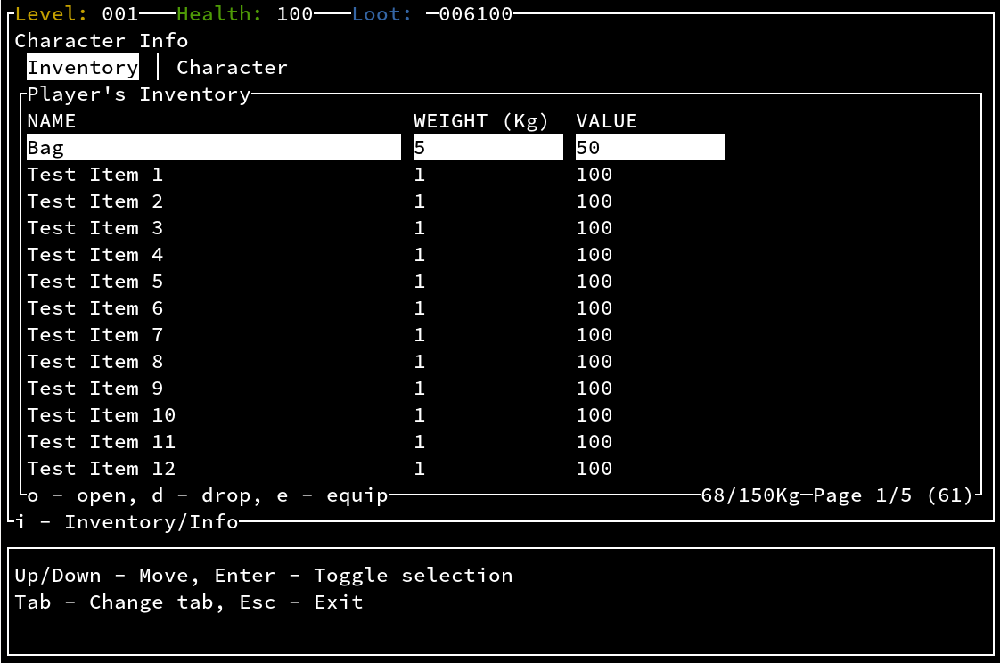
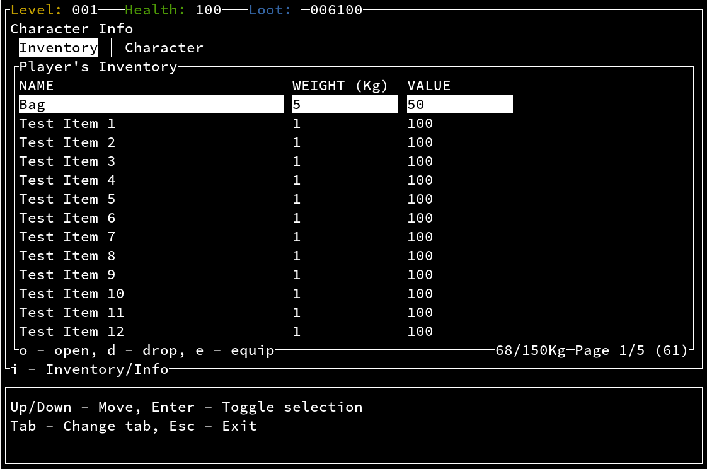

My Projects
ARQ (ASCII Roguelike Quester) and ARQ-Rust
Back in 2013, I started on one of my first personal programming projects. ARQ (ASCII Roguelike Quester)
I had played a bit of Nethack and some other text-based games and wanted to dive into the technical challenges of creating something similar, while learning some C++ along the way.
I've learned quite a lot while working on this, particularly:
- Procedural map generation (with some help from an old colleague: Christopher J Harvey-Smith)
- curses/ncurses for developing text-based user interfaces
As this was a learner project it got a little messy as time went on, and I started to get frustrated at working in C++.
In 2021, I learned about the Rust language for the first time. After reading about it, I could see it addressed some of my main frustrations around developing in C++, so I was excited to give it a go by porting/re-implementing ARQ.
This is how ARQ-Rust got started
Why I prefer Rust to C++:
- The borrow checker - ownership/borrowing avoids the chance of accidental runtime pointer errors, and removes to need to worry about memory management too much
- Cargo - Rust's built-in package manager provides a complete dependency management / build system out-of-the-box instead of needing to roll your own dependencies/Makefiles/CMake setup
- Explicit mutable/immutable referencing - which helps you to be clear around your intentions and avoid side effects when designing structs/traits. This also prevents you from concurrently modifying data and forces you to think about where to pass references or where to clone data (data boundaries).
- Built-in unit test support
Moving over to Rust went really well, and I was able to redesign quite a lot of things from the ground up, and make some improvements on the original:
- Display management, ARQ-Rust now uses a "View" (complete UI control, I/O looping) and "Framehandler" (Dumb view that draws a model to a screen frame) system
- An improved start/settings menu with custom widgets
- Music support
This is still under development currently, here are some developmental screenshots to give an idea of the project:
 

purses - GitHub
purses (A portmanteau of PulseAudio and curses) is a text-based UI audio visualiser meant for Linux command-line usage
It hooks up to the PulseAudio sound server that is popular on Linux systems
More specifically it's written in C and uses my own implementation of the Cooley-Tukey FFT algorithm
This seemed line a fun way to learn about Digital Signal processing, and seemed like the perfect opportunity to write something in C

This Site - darrenjoseph.uk (Github)
This site is technically also one of my personal projects!
I've always admired simplistic websites such as those on Neocities
I wanted to create my own little site that could:
- Use my frontend development experience to create a Minimalist HTML/CSS/JS site while utilising modern browser features/support
- Use my SysAdmin/DevOps experience to manage/maintain my owner server/site setup. (This site is hosted by Krystal if you're curious)
- Use my (rather limited) experience with image editing (Photoshop/GIMP) to create icons, badges, and banners
- Evoke a slightly retro 90s/early 2000s vibe
- Give me somewhere to play with web technologies/ideas (I will likely add a page for this at some point).